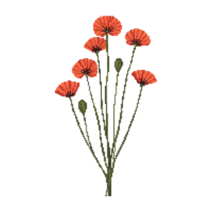

Long-headed poppy
Papaver dubium

Long-headed poppy is an annual for mid-border, suited to full sun and loam, sandy soil or chalk, flowering Jun, Jul, Aug.
| Type | Annual |
|---|---|
| Mature height | 50 cm |
| Spread | 25 cm |
| Aspect | full sun |
| Foliage | Deciduous |
| Hardiness | USDA 3a-9b, RHS H5 |
| Pollinator-friendly | Yes |
| Pet-safe | No |
Where to use it in a border
At around 50 cm, it sits best through the middle of a border, between taller structure behind and edging in front. Give it about 25 cm of room to spread, roughly 4 to the metre when planted in a drift. It is hardy across USDA zones 3a to 9b and rated H5 by the RHS, so check it suits your area before planting.
It appears in our lists of full sun, sandy soil, chalk soil, pollinator-friendly plants.
Flowering through the year
Worth knowing
- Not recorded as pet-safe; site it away from pets that graze if that matters to you.
- Its flowers are valued by bees and other pollinators.
Good companions
Plants that share its conditions and style, chosen to complement its place in the border:
- Coneflower 'Cheyenne Spirit'to flower when it does not
- Cowslipto edge in front
- Harebellto edge in front
- Moss Phloxto edge in front
- Ragged Robinto edge in front
- Snake's Head Fritillaryto flower when it does not
Garden styles
Cottage garden Meadow Native Wildlife garden
See Long-headed poppy set in a full border, with spacing and companions worked out for your own conditions, in Border Builder.